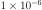
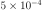
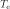
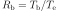
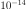
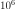
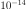
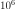

4.1.20. Hot: collisional ionisation equilibrium absorption model¶
This model calculates the transmission of a plasma in collisional ionisation equilibrium with cosmic abundances.
For a given temperature and set of abundances, the model calculates the ionisation balance and then determines all ionic column densities by scaling to the prescribed total hydrogen column density. Using this set of column densities, the transmission of the plasma is calculated by multiplying the transmission of the individual ions.
The transmission includes both continuum and line opacity. For a description of what is currently in the absorption line database, we refer to Absorption model theory. By default, the model mimics the transmission of a neutral plasma by setting the default temperature to 1E-3 eV ( keV).
Please note that since SPEXACT updates 3.06.00 and 3.06.01, the behaviour of the hot model at low temperatures changed. Since these versions, SPEX includes also charge exchange processes in the hot model and these change the ionisation balance at low temperature. While for previous SPEX versions, setting a temperature of  was enough to obtain a neutral gas, now, the temperature needs to be set to keV to obtain the same result.
Since the hot model is mostly used to model neutral gas in the ISM, we decided to set the default temperature to the minimum temperature of keV. This should result in a neutral gas and give the user the result most users expect.
The parameters of the model are:
nh : Hydrogen column density in 
 .
Default value:
.
Default value:  (corresponding to
(corresponding to
 , a typical value at low Galactic
latitudes).
, a typical value at low Galactic
latitudes).t : the electron temperature  in keV. Default
value: keV.rt : the ratio of ionization balance to electron temperature,
 in keV. Default
value: 1.hden : Hydrogen density in 
 .
Default value:  (corresponding to
 , a typical value for the ISM).
.
Default value:  (corresponding to
 , a typical value for the ISM).The following parameters are common to all our absorption models:
f : The covering factor of the absorber. Default value: 1 (full
covering)v : Root mean square velocity 
rms : Rms velocity  of line blend
components
of line blend
componentsdv : Velocity distance  between different blend
components
between different blend
componentszv : Average systematic velocity  of the absorber (using relativistic Doppler shift)
of the absorber (using relativistic Doppler shift)The following parameters are the same as for the cie-model (Cie: collisional ionisation equilibrium model):
ref : Reference element01...30 : Abundances of H to Znfile : Filename for the nonthermal electron distributionb : External magnetic field strength in Gauss. See cie section. Default value: 0Recommended citation: de Plaa et al. (2004) and Steenbrugge et al. (2005).